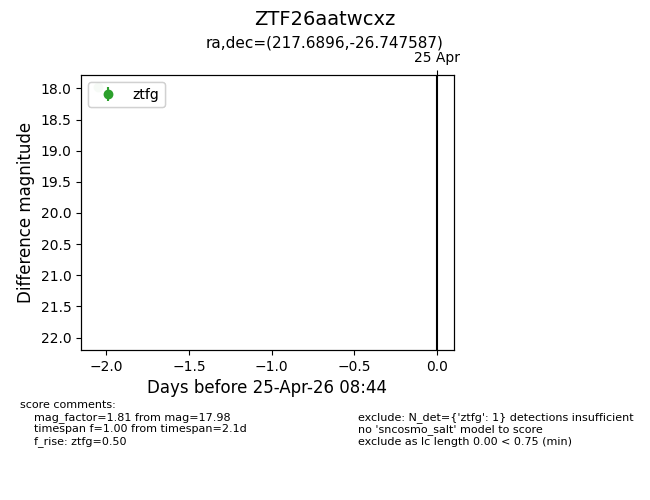
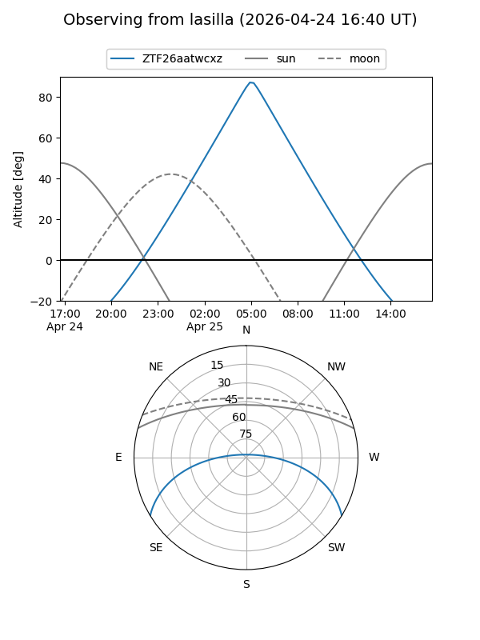
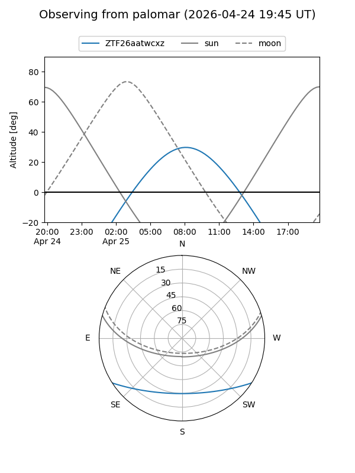

ZTF26aatwcxz
Target ZTF26aatwcxz at 2026-04-25 08:45
Aliases and brokers:
FINK: link
Lasair: link
ALeRCE: link
alt names
ZTF26aatwcxz (ztf,fink_ztf)
Coordinates:
equatorial (ra, dec) = 217.6896,-26.74759
equatorial (HMS+DMS) = 14:30:45.51,-26:44:51.31
galactic (l, b) = (328.8955,+31.06880)
Flags:
Photometry:
last ztfg=17.98
1 ztfg detections
Lightcurve

Visibility


Additional plots